<div class="container-fluid">
    <div class="row">
        <div  class="d-md-flex justify-content-center neows min-vh-100">
            <div *ngIf="this.keplerArray.length == 0 && this.isLoading == false" class="col-12 col-md-6 apod-content">
                
            </div>

            <form *ngIf="this.keplerArray.length == 0 && this.isLoading == false" [formGroup]="keplerForm"
                class="d-flex flex-column  col-12 col-md-6 apod-content text-center p-5">
                <input formControlName="minKelvin" min="0" max="1000"  placeholder="min kelvin (temperature)" type="number">
                <input formControlName="maxKelvin" min="0" max="1000"  placeholder="max kelvin (temperature)" type="number">
                <input formControlName="limitResults" min="0" max="1000"  placeholder="limit results (planets limit)" type="number">
                <button (click)="search()" class="p-2 mt-3">Search</button>
            </form>

            <div *ngIf="this.isLoading == true" class="col-12 col-md-6 apod-content">
                
            </div>

            <div *ngIf="this.keplerArray.length > 0 && this.isLoading == false" class="col-12 apod-content table-responsive">
                <div class="d-flex flex-column col-8 col-md-3 m-2">
                    <button (click)="changeFlag()">Back</button>
                    <button (click)="info()" class="mt-2">Info</button>
                    <button (click)="exportToExcel()" class="mt-2">Export to Excel</button>
                </div>
                <table id="excel-table" class="table neows-table">
                    <thead>
                        <tr>
                            <th scope="col">#</th>
                            <th scope="col">KOI</th>
                            <th scope="col">A</th>
                            <th scope="col">RPLANET</th>
                            <th scope="col">RSTAR</th>
                            <th scope="col">TSTAR</th>
                            <th scope="col">KMAG</th>
                            <th scope="col">TPLANET</th>
                            <th scope="col">T0</th>
                            <th scope="col">UT0</th>
                            <th scope="col">PER</th>
                            <th scope="col">UPER</th>
                            <th scope="col">DEC</th>
                            <th scope="col">RA</th>
                            <th scope="col">MSTAR</th>
                        </tr>
                    </thead>
                    <tbody>
                        <tr *ngFor="let exo of this.keplerArray; let i = index">
                            <th scope="row">{{i+1}}</th>
                            <td>{{this.exo.koi}}</td>
                            <td>{{this.exo.a}}</td>
                            <td>{{this.exo.rPlanet}}</td>
                            <td>{{this.exo.rStar}}</td>
                            <td>{{this.exo.tStar}}</td>
                            <td>{{this.exo.kmag}}</td>
                            <td>{{this.exo.tPlanet}}</td>
                            <td>{{this.exo.t0}}</td>
                            <td>{{this.exo.ut0}}</td>
                            <td>{{this.exo.per}}</td>
                            <td>{{this.exo.uper}}</td>
                            <td>{{this.exo.dec}}</td>
                            <td>{{this.exo.ra}}</td>
                            <td>{{this.exo.mstar}}</td>
                        </tr>
                    </tbody>
                </table>
            </div>
        </div>
    </div>
</div>